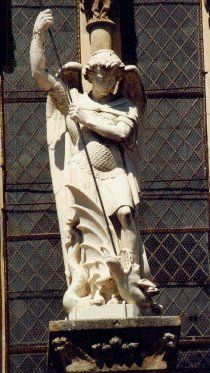
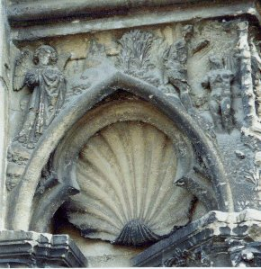

Emblema X.
revu le 27 juillet 2003
Da ignem igni, Mercurium Mercurio, et sufficit tibi.
(Donne du feu au feu, du mercure à Mercure, et cela te suffit1.)
A cette chaîne qui l’assemble
La machine du monde est pendue tout entière :
Le semblable toujours réjouit son semblable2.
Ainsi le feu au feu et Mercure à Mercure
S’unissent : de ton art vois ici la limite.
Vulcain pousse Mercure ; mais cet Hermès ailé
Te dégage, ô Cynthie3, qui libère Apollon.
Cette sentence, si on la prend au sens littéral prescrit seulement la quantité de feu et de Mercure et non l’introduction dans le sujet de quelque qualité nouvelle. En effet tout semblable ajouté à son semblable renforce sa similitude. C’est pourquoi les médecins affirment que les contraires portent remède à leurs contraires et que ceux-ci sont chassés par ceux-là ; ainsi nous voyons que le feu est éteint par l’eau et attisé par le feu qu’on lui ajoute. Le poète pense de même quand il dit :
" Et Vénus dans les vins et le feu dans le feu exercent leur fureur. "
Mais il faut répondre que feu et feu, Mercure et Mercure diffèrent grandement entre eux. Il existe en effet chez les philosophes de nombreuses sortes de feux comme de mercures4. De plus la même chaleur et le même froid, dès que leur lieu et leur siège diffèrent, se distinguent de qualités du même genre. Nous voyons par exemple que la chaleur du feu appliquée à un membre est attirée et ôtée par une chaleur semblable, et que les membres engourdis et presque réduits à l’état de mort par le froid de l’hiver sont restaurés si on les plonge dans l’eau froide, sans que l’on ajoute immédiatement une chaleur externe. De même qu’une lumière plus vive en obscurcit une autre moins intense, une chaleur ou un froid plus violents atténuent une chaleur, un froid plus modérés. Il importe toutefois que la chaleur et le froid externes soient moins grands que ceux dont les membres ou les articulations étaient affectés auparavant, sinon l’impression provoquée serait identique à celle qui existait auparavant et le semblable serait augmenté bien plutôt qu’extrait par son semblable. En effet l’attraction du froid par l’eau froide et de la chaleur ignée par la chaleur convient à la nature, étant donné que tout changement soudain d’une qualité en son contraire est dangereux pour elle et qu’elle l’accueille moins volontiers, tandis qu’elle tolère celui qui se fait peu à peu et comme par degrés. Nous affirmons qu’autre est le feu interne, principe essentiel qui existe fixé déjà au préalable dans le sujet philosophique, et autre le feu externe. Il faut en dire autant du Mercure5. Ce feu interne l’est d’une façon équivoque à cause de ses qualités ignées, de ses vertus et de ses opérations, et le feu externe l’est d’une manière univoque. Il faut donc donner le feu externe au feu interne et, de la même manière, Mercure à Mercure pour que le dessein de l’art se réalise.
Pour amollir ou mûrir par la cuisson tout ce qui est dur et cru, nous utilisons le feu et l'eau. L’eau dissout la dureté et pénètre dans les parties compactes, la chaleur lui ajoute la force et le mouvement. Cela se voit, par exemple, dans la cuisson des petits pois : par eux-mêmes ils sont durs et compacts, mais l’eau les fait gonfler, les brise et les réduit en purée, car la chaleur du feu raréfie l’eau par l’ébullition et la transforme en une substance plus ténue et presque aérienne. Ainsi la chaleur du feu résout en eau les parties crues des fruits ou des viandes et les fait s’évanouir dans l’air avec cette eau. De la même manière le feu et le mercure sont ici le feu et l’eau ; et eux-mêmes sont les parties mûres et les parties crues ; celles-là doivent être mûries par la cuisson, celles-ci doivent être purgées de leurs superfluités par le ministère du feu et de l’eau6.
Nous démontrerons brièvement ici que ces deux feux et ces deux mercures sont avant toutes choses et seuls nécessaires à l’art. Empédocle7 a posé deux principes de toutes choses : la discorde et l’amitié. La discorde provoque les corruptions, l’amitié les générations. On aperçoit clairement une discorde du même genre entre l’eau et le feu, puisque le feu fait s’évaporer l’eau et qu’inversement l’eau, si on l’ajoute au feu, l’éteint8. Cependant il est manifeste que les mêmes éléments engendrent grâce à une certaine amitié, car, sous l’effet de la chaleur, il se produit, à partir de l’eau, une génération nouvelle d’air et aussi un durcissement de l’eau en pierre. Ainsi ces deux éléments, en quelque sorte primitifs, donnent naissance aux deux autres et entraînent, par conséquent, la production de toutes choses. L’eau fut la matière du ciel et de tous les êtres corporels9. Le feu, en tant que forme, meut et informe cette matière. Ainsi l’eau ou mercure fournit ici la matière, et le feu ou soufre, la forme10. Pour que ces deux éléments parviennent à opérer et qu’ils se meuvent mutuellement en dissolvant, en coagulant, en altérant, en colorant et en rendant parfait, il a fallu avoir recours à des adjuvants externes, sans lesquels il n’y aurait pas d’effet produit11. Car de même que l’artisan ne fait rien sans marteau12 et sans feu13, le philosophe est, lui aussi, impuissant s’il n’a pas ses instruments, qui sont l’eau et le feu. Et cette eau est appelée par certains eau de nuées, comme ce feu est dit occasionné. L’eau de nuées est sans aucun doute ainsi appelée parce qu’elle tombe goutte à goutte, comme la rosée de mai, et qu’elle se compose de parties extrêmement ténues. Comme la rosée de ce mois enfermée dans une coquille d’œuf élève, dit-on, dans l’air, l’œuf ou ce qui le contient, cette eau de nuées ou rosée fait de même monter l’œuf des philosophes, c’est-à-dire qu’elle le sublime, l’exalte, le parfait14. Cette eau est également un vinaigre très aigre qui fait du corps un pur esprit15. Car de même que le vinaigre possède des qualités diverses, pénètre profondément et resserre, ainsi cette eau dissout et coagule, mais n’est pas coagulée, car elle n’appartient pas en propre au sujet16. Cette eau a été rapportée de la fontaine du Parnasse qui, contrairement à la nature des autres fontaines, naît au sommet d’une montagne, créée par le sabot de Pégase, cheval volant17. Il faut en outre la présence du feu actuel qui doit cependant être modéré par ses degrés, comme par des freins18. Il faut en effet imiter ici le Soleil qui, passant du Bélier au Lion, augmente peu à peu sa chaleur pendant que les êtres croissent, et se rapproche de plus en plus19. En effet, l’enfant des philosophes doit être nourri de feu comme de lait et toujours plus abondamment à mesure qu’il grandit20.
Notes1. Voila un emblème sibyllin. L'image montre deux Mercure. Cette scène fait penser à la Clef II de Basile Valentin [Douze Clefs] où l'on voit un Hermès entouré de deux soldats ou qui se prennent pour tels. La Clef II est consacrée au double Mercure (1,2,3,4,5,6,7,8,9,10,11,12,13,14,15,16,17,18,19,20,21,22,23,24,25,26,27,28,29,30,31,32). Le Mercure assis est-il signe qu'il lui faut attendre que le feu ait été bien agencé avant de pouvoir opérer ?
2. Tous les grands Philosophes chymiques n'ont eu que cette pensée : faire en sorte que nature se réjouisse de nature. En sorte que l'on peut croire qu'ils ont voulu imiter la nature. Quand on sait quelles sont les oeuvres de la nature, on comprend pourquoi Hermès naquit dans une caverne. Lorsqu'Apollon y pénétra, il découvrit maints trésors dans ses anfractuosités - notre Artiste ne pourra en découvrir que dans des géodes -. Quoi qu'il en soit, Apollon découvrit de l'or, de l'argent, etc. On chercherait en vain le lieu de cette caverne, car celles assignées au dieu étaient nombreuses [cf. le lieu où Appolionios découvrit la Tab. Smarag.]
3. il s'agit de Diane, autrement nommée Diane Ortygienne, Diane Laphyrée, Diane Ephesienne, Pergeane, Scythienne, Ecbatane, Alpheonienne, Mynthiade, Ilithie, Lucine, Latonienne, Cynthie, Artemis, Dictine...C'est à l'Artiste qu'il échoit de réveiller Diane [67 occurrences].
4. Il y a trois Mercure dans l'oeuvre. Le Mercure des Philosophes qui correspond au principe Sel de Paracelse ou à l'Arsenic de Geber. C'est le Corps de la Pierre ; puis il y a le Mercure commun ou 1er Mercure que l'on peut préparer avec le Sel à partir d'une substance que vous trouverez nommée dans la section Fontenay. Enfin, on trouve le Mercure philosophique ou second Mercure qui est celui de la Grande coction.
5. cette question du feu interne a été finement analysée par Batsdorff dans son Filet d'Ariadne et par D'Espagnet dans son Oeuvre Secret d'Hermès.
FIGURE I
(Saint-Michel en l'Herm - l'archange saint Michel et le dragon - parabole sur le feu secret -
cliché Alain Mauranne)La figure I nous montre un superbe archange Gabriel. Un peu d'histoire : L'abbaye qui abrite ce saint fut fondée en 682 par des moines venus d'Hiero (Noirmoutier). Après une belle extension qui se manifeste par La création de nombreux prieurés, dont celui de Luçon, l'abbaye subit les ravages perpétrés par les Vikings qui, une fois Luçon Prise, forcèrent l'abbaye en 877. Le monastère devint alors leur repaire pendant de longues années. Pourtant, au Xe siècle, les moines reviennent à Sainl-Michel-en-l'Herm. L'évêque de Limoges, Elbes, frère du duc d'Aquitaine Guithen Ier, s'y retire, y meurt et y est
enterré en 990. Après un premier repeuplement mené par le vicomte de Thouard qui y fait construire une première église, l'abbaye passe à d'autres moines venus de Luçon et connait une restauration et un agrandissement de son abbatiale que le feu va malheureusement détruire en 1049. Une nouvelle fois reconstruite, Saint-Michel-en-l'Herm s'enrichit, participe à l'asséchement des marais et cesse d'être une île, tout en passant sous la domination des Mauléon, dont l'un des plus importants, Savary, y séjourne et s'y fait enterrer. Après le pillage subi en 1452 pendant la Guerre de Cent Ans, l'abbaye voit au siècle suivant se déchaîner les violences des Protestants qui seront sans pitié et massacreront près de quatre cents personnes.En 1589, de nouveau les moines se réinstallent, mais l'abbaye est dans un état lamentable. A la mort de Mazarin, le dernier abbé cornmendataire, commence une campagne de reconstruction : l'architecte Toscane élève le logis des moines, celui de l'abbé et le réfectoire. Une nouvelle église est construite de 1728 à 1740, qui sera jetée à bas en 1790 par la Révolution alors qu'il n'y avait plus que sept moines à Saint-Michel.
6. Nous ne reviendrons pas sur ce point précis pour l'avoir analysé déjà plusieurs fois. Retenons avant tout que le Mercure est un fondant alcalin qui permet de dissoudre ce que les chimistes, avant Lavoisier, appelaient les chaux métalliques.
7. Les jeux de l'Amour et de la Haine. Tel est le spectacle spirituel que donne à voir Empédocle. C'est lui qui se précipita dans le cratère de l'Etna qui n'aurait rejeté que ses sandales de bronze [est-ce un rapport à l'Airain hermétique ?]. C'est lui aussi qui a posé en principe la transmutation des Eléments [voir section Cristallogénie]. De sa philosophie, l'étudiant en alchimie retiendra qu'entre l'amour et la haine, il y a un tiers milieu qui a nom la concorde et où domine l'harmonie. Empédocle en vient à décrire des éléments en tant qu'états intermédiaires, métastables en quelque sorte, des « champignons » qui nous rappellent quelque sel que les Philosophes se sont soigneusement réservés ;
8. Nous avons toutefois rencontré des exceptions remarquables à la règle. D'autant plus remarquables qu'au moins deux d'entre elles s'inscrivent dans le cadre du Grand oeuvre [voir Atalanta, VII]. Ce qui définit la relation de l'EAU au FEU n'est rien qu'une différence. Dans le premier cas, nous devons retrancher l'AIR du FEU ; dans le second cas, retrancher la TERRE de l'EAU [cf. cristallogénie]. Dire que le FEU éteint l'EAU ne veut donc dire autre chose que de séparer la TERRE de l'AIR [et inversement].
9. C'est faire allusion à la rosée de mai. Autrement dit au Lion vert. L'AIR donne ainsi de l'EAU dont le caractère est d'être ignée.
10. Dans une autre section, on a été amené à assimiler l'EAU à la SENSATION qui précède la formation de la Pierre, d'un côté. Et de l'autre côté, le FEU va procurer la FORME ou TERRE. Des deux naîtra la quintessence. L'EAU est le Mercure, le FEU est le Soufre ou teinture de la pierre.
11. Ces adjuvants seraient-ils de la nature de l'AIR et de la TERRE ? L'AIR des sages est un mélange de Mercure et de Rebis, déterminant le second Mercure ou Compost. La Terre est le Soufre blanc.
12. le marteau est l'emblème de la forme fluente du Mercure. En toute hypothèse, il s'agit donc du Mercure dans son second état, c'est-à-dire du Mercure philosophique.
13. Il s'agit ici du feu vulgaire qui joue tout de même un rôle important dans l'oeuvre...Lui seul peut imprimer son mouvement au premier moteur, ne l'oublions pas.
14. On ne peut pas mieux définir l'objet du 3ème oeuvre. Dans un premier temps, installation sous forme saline et poudreuse des susbtances : éléments du Mercure, Soufres rouge et blanc. Dans un second temps, mise à feu et contrôle de la température qui doit aller jusqu'au blanc [aludel d'un four à porcelaine]. Sublimation du Soufre. Décroissance très lente de la température, nécessaire pour obtenir la réincrudation.
15. C'est la phase de sublimation. Elle correspond, dans la voie humide à la première phase du processus dite humide elle-même, qui s'oppose à la deuxième phase, celle de l'assation où l'on assiste à la naissance du BasileuV. Le « vinaigre très aigre » est le premier Mercure ou Mercure commun. C'est de lui dont parle Philalèthe quand il évoque les colombes de Diane.
16. C'est le moyen ou milieu évoqué par Fulcanelli, l'artifice de l'oeuvre, le secret suprème qui permet la solubilisation des Soufres, leur réincrudation. C'est la seule façon de concevoir l'alchimie sous un angle de vue rationnel. C'est aussi par là que l'on trouve une correspondance presque parfaite entre ce que dit Fulcanelli et les expériences de synthèse pratiquées par Ebelmen, Gaudin, Sainte Claire Deville, etc.
17. Pour tout ce qui a trait aux fontaines, voir les sections Principes et St Grégoire. Voir aussi la Fontaine du Trévisan et la Fontaine des Amoureux de science de Jean de Meung [1, 2, 3, 4, 5, 6, 7,]. Cf. aussi le signe des Poissons et celui du Verseau, dans l'Atalanta, XL.
FIGURE II
(façade du Palais Jacques-Coeur, Bourges - l'eau benoîte des Sages : fontaine de magnésie et mérelle - cliché Alain Mauranne)18. freins ou mors, ce qui explique la présence dans maints traités du mot lupus [loup = frein, mors, grappin]. Les alchimistes ont bien abusé les lecteurs naïfs qui s'imaginaient voir dans l'antimoine le « loup qui dévore les métaux » [cf. Char Triomphal, etc.]
19. Le Bélier et le Lion définissent avec le Sagittaire le triangle de feu [1, 2, 3, 4, 5, 6, 7, 8,]. Rappelons que le Bélier a des rapports avec Arès et Ariès ; que le Lion a des rapports avec le Mercure et avec le Soufre rouge. Qu'enfin, le Sagittaire voile l'agent de réincrudation des Soufres. Sur ces trois signes, voyez : pour le Bélier, l'emblème L ; pour le Lion, l'emblème XLIV ; enfin, sur le Sagittaire, l'emblème XLIX. Consultez aussi notre zodiaque alchimique.
20. Sur le Lait de vierge [25 occurrences], consultez surtout le Livre secret d'Artéphius.